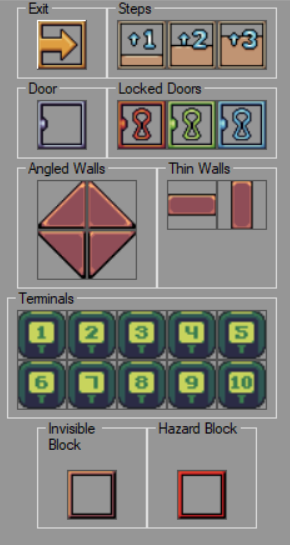

Modifiers are special objects that will change shape of a wall.
Default modifiers are premade and do a little more than just that. For example, Exit lets player finish a map and go to the next one. They are mainly placed on top of walls but there are some of them that can be or required to be placed on top of floors.
Custom modifiers can also be created. Further explanation can be found in "Advanced Tools/Custom Modifiers"

Exit - level exit, allows player to finish a map. This can be placed on floors AND on walls. If it's placed on floor player only needs to step on it to finish a level and of it's placed on wall, player will need to press a use key to activate it.
Steps - predefined walls with different heights that will let player get to the second floor. Can be placed only on walls.
Doors - can be placed only on walls. These modifiers will create a door using a texture a wall underneath it has. Floor texture will be taken from one of the surrounding floor tiles. Locked doors will require an apropriate key to be found before player can open them.
IMPORTANT! Floor textures will be merged together of they're different from different sides of the door AND if the door is on the first floor. On higher floors it's not necessary as you can place a wall underneath the door. Hinged doors use a special texture, consisting of two textures placed together as a tall one (the same as for walls). The top one will be door's texture, the lower one will be used as a texture of the frame. If you use a normal rectangular texture, the frame will use the same texture as the door.
Different wall types - this speaks for itself. Just different predefined walls shapes. Can be placed only on walls.
Terminals - Can be placed on walls only. Used to add interactive walls which upon using will call a script (see "Advanced Use/Terminals").
Hazard block - can be placed on floors only. When player is inside this block, they will take some damage.
Invisible block - just an invisible block. Can be placed on floors.